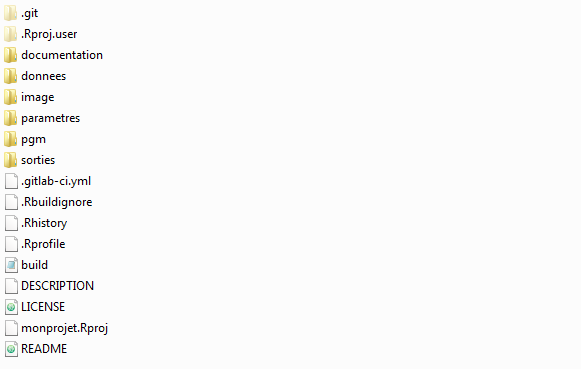

Chapitre 5 R Markdown: un exercice pour créer son premier document
5.1 Quelques éléments d’explication
5.1.1 Objectif
L’objectif est d’exploiter et analyser les données sur les naissances 2017. L’analyse sera centrée sur les 3 axes définis dans l’expression des besoins ici. Le travail sera réalisé en mode collaboratif par des équipes de personnes (les mêmes que pour la partie Git).
- Un premier temps sera consacré à la production d’une première version de document
- Un second temps sera consacré aux modifications (amélioration, évolution, modifications).
5.1.2 Le produit attendu
- Un rapport au format
htmlcentralisant les résutats attendus. Ce rapport sera généré par un fichier.Rmd - Le rapport final ainsi que les fichiers constitutifs du projet seront contenus dans un projet
monprojet.Rproj. - Ce projet sera d’une part stocké sur
Gitlab, d’autre part accédé viaR Studiopar chaque contributeur.
5.1.3 Expression des besoins
L’étude sera réalisée sur une région au choix.
Elle devra comporter les éléments suivants :
- Un rapide descriptif de la source ;
- Revenu médian des communes dans la région choisie et comparaison avec les autres régions de France hexagonale. Cette comparaison doit comporter un tableau et un graphique;
- Une analyse d’au moins une autre variable économique ou démographique lorsque cette information est disponible;
- Si vous avez le temps, une carte en utilisant un fonds de carte communal de 2016 disponible sur le site de l’IGN ou, en interne à l’Insee, sur creacartes.
Les 3 derniers parties devront intégrer des illustrations de votre choix ou celles proposées.
Le texte devra contenir au moins un résulat d’une instruction R.
5.1.4 Données mobilisées
Pour cet exercice, on utilise les données de revenu au niveau communal issues
de Filosofi 2016. Grâce à Pierre Lamarche, il existe deux packages R qui
facilitent l’accès à ces données disponibles sur insee.fr: doremifasol et
doremifasolData. Ils sont disponibles sur la page Github
InseeFrLab. En l’occurrence, nous allons
utiliser doremifasolData qui ne nécessite pas, une fois installé, de connexion
internet pour accéder aux données. Pour l’installer:
devtools::install_github('inseeFrLab/doremifasoldata', ref = "main")Sur AUS, cette commande ne fonctionnera pas. Il faut aller chercher le
package sur un dépôt nexus:
install.packages("doremifasolData", repos = "https://nexus.insee.fr/repository/r-local")5.3 Demande de modifications
L’un des avantages de R Mardown est la mise à jour dynamique de
document. Nous allons voir comment intégrer facilement :
- d’évolution
- amélioration
- modification
Cas d’une demande d’amélioration
Il est peu coûteux de changer des paramètres de mise en forme avec R Markdown
- Imaginons qu’on vous demande finalement de numéroter les sections. Faire la modification
- On vous demande de revoir le thème
ggplotpour utiliser le thèmetheme_bwsur tous les graphiques
Comment s’organiser ?
Voici des propositions pour l’organisation (cliquer sur chaque item pour dérouler):
Se mettre d’accord sur la trame qui sera le squelette du rapport
Identifier les tâches
Se mettre d’accord sur l’organisation des fichiers et les branches à créer
Un exemple d’arborescence de projet

Affecter les tâches
Gitlabet éventuellement utiliser les MilestonesIntégrer les éléments dans le document squelette Rmd
Ne pas oublier les bonnes pratiques évoquées précédemment et celles, plus génériques, évoquées dans la documentation utilitR.
Exercice 3
Réaliser ce premier document qui contiendra à la fois résultats et commentaires associés.
A vous de jouer !